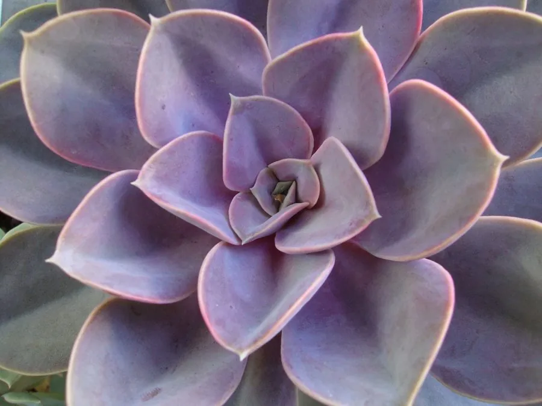

多肉植物 · 植物界
紫珍珠 Echeveria 'Perle von Nürnberg'

景天科拟石莲花属经典杂交品种，叶片紫粉带白粉、莲座端庄，是辨识度极高的多肉，适合盆栽观赏，由园艺杂交育成。
- 分类
- 门被子植物门纲木兰纲目虎耳草目科景天科属拟石莲花属
- 栖息环境
- 园艺杂交品种，喜光、干燥、通风良好的环境
- 地理分布
- 世界广泛盆栽栽培，中国各地多肉市场常见
- 保护级别
- 暂无评估（栽培品种）
物种志
紫珍珠为景天科拟石莲花属多年生肉质草本，是园艺杂交品种，株高 10–20 厘米，叶片匙形，肉质肥厚，螺旋排列成莲座状，叶色灰紫至紫粉，表面覆一层白粉，叶缘在光照充足时泛红。花葶自叶腋抽出，花小，橙红色，花期春季；果实为蓇葖果。
紫珍珠由园艺家杂交育成，亲本原产墨西哥，喜阳光充足、凉爽干燥和通风良好的环境，耐旱怕积水，夏季高温时进入半休眠。它叶色独特，在光照充足、温差较大的环境中呈深紫粉色，光照不足则变绿、徒长。栽培以颗粒土为主，浇水见干见湿；繁殖以叶插和枝插为主，花后可剪去花葶减少养分消耗，夏季高温时注意遮阴控水，避免徒长。
形态与习性
- 株高10–20 厘米，莲座直径可达 15 厘米
- 花期春季，花小，橙红色
- 果期花后结蓇葖果
- 光照喜充足阳光，夏季需适当遮阴
- 水分耐旱，盆土干透再浇，忌积水
- 土壤颗粒为主、排水良好的矿质土
- 繁殖叶插、枝插
- 主要用途盆栽观赏、多肉拼盘
趣味知识
- 紫珍珠是园艺杂交品种，叶色在光照充足、温差大时呈深紫粉色。
- 叶片表面的白粉有防晒和减少水分蒸发的作用，浇水时尽量别冲掉。
- 光照不足时紫珍珠会变绿、徒长，株形变得松散。
- 它由园艺家杂交育成，原种来自墨西哥，是经典的多肉品种之一。